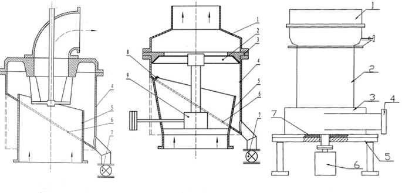

Raymond mill analyzer with coarse powder collection device
Time:2019-03-27
Raymond mill analyzer with coarse powder collection device
The body of the existing Raymond mill analysis machine adopts a single-layer structure. When the material is crushed by Raymond mill, the material enters the main body of the Raymond mill for grinding. During the grinding process, the material is repeatedly moved by the blade, and the system fan is negative. Under the action of pressure, the powder passes through the analysis machine with the airflow, and the fine powder passes through the analysis machine blade and enters the back gas and solid separation system. The coarse powder is smashed to the inner wall of the analyzer and then falls into the crushing zone and is pulverized again; The analyzer operating parameters produce a specification product. The powder produced by Raymond Mill has a particle size of 10-3000 mesh. By controlling the operating parameters of Raymond mill, it can obtain two grades of d97=100-400 mesh and d>400 mesh, but can not obtain d= 10-400 mesh coarse-grained products, which have a large market demand, and their price even exceeds the price of d97=100-400 mesh specifications.
The Raymond mill analyzer with coarse powder collecting device produced by our company makes the products produced by Raymond mill have d=10-400 mesh coarse grade and d97=100-400 mesh and d>400 mesh fine grade three-speed specifications. Products to meet market demand. In order to achieve the above objectives, the Raymond mill analysis machine with the coarse powder collecting device comprises a staged impeller, an impeller transmission device and an analysis machine body, and the fuselage is composed of a cylinder inner layer and a cylinder outer casing (the bottom side of the cylinder casing may be an inclined bottom) a sandwich structure composed of an edge, an arc-shaped guide groove directly connected to the inclined bottom edge, and the inner layer of the cylinder and the outer shell of the cylinder are connected by an arc-shaped guide groove (the upper end of the curved guide groove is provided with a sandwich baffle), and is curved. The guide groove is rotated from the highest point to the lowest point along both sides of the inner and outer nips, and the outer casing of the cylinder is located at the lowest point of the curved guide groove to open a discharge port, and the discharge port (the external collection mechanism of the discharge port is The output tube and the discharge valve are composed of an external receiving assembly mechanism.
The Raymond mill analyzer with coarse powder collecting device can make the powder processed by Raymond mill separate the coarse powder while separating the required fine powder, broaden the product specification range and improve the efficiency of Raymond mill. ,reduce manufacturing cost. In addition, the Raymond Mill analyzer with coarse powder collection device is simple to manufacture, convenient and flexible to use, and can be directly applied to the newly manufactured Raymond mill analyzer, or the existing Raymond mill analyzer can be modified and applied; The chip graded impeller analyzer is also suitable for cage graded impeller analyzers.